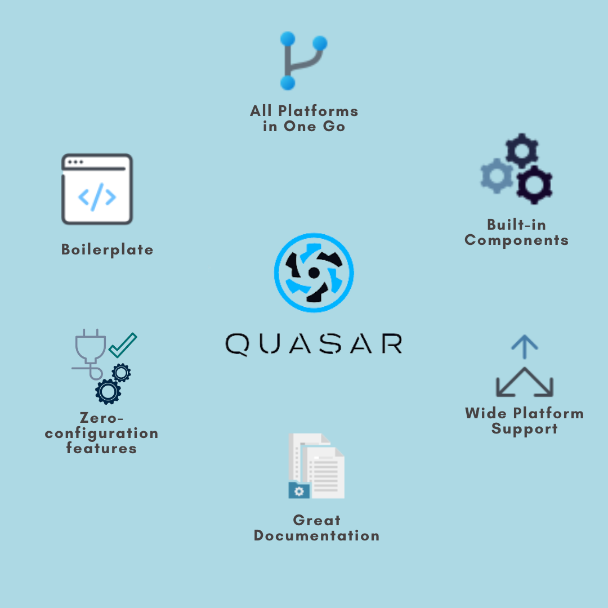
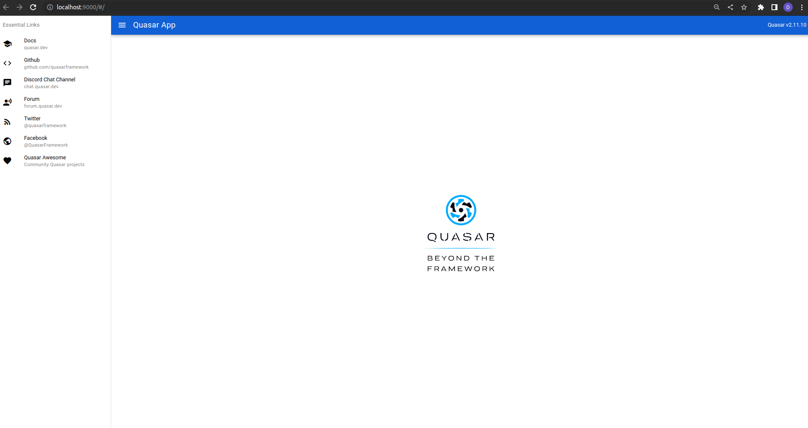
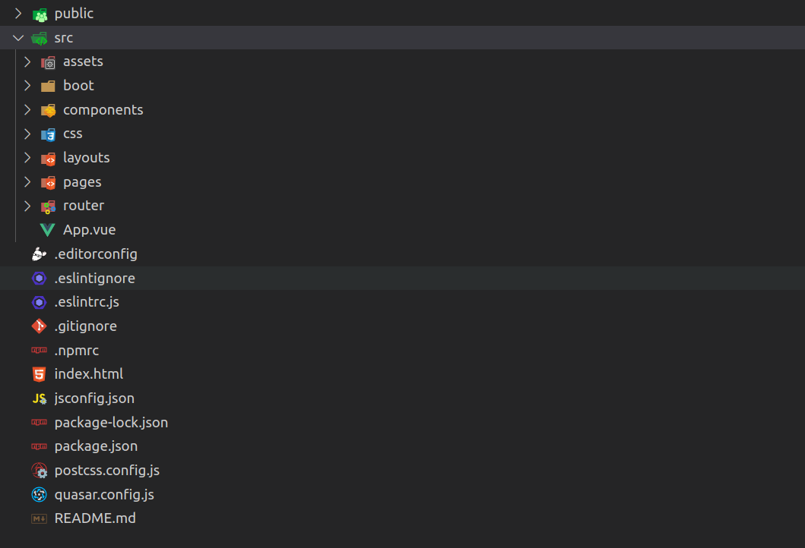

Introduction to Quasar & Hybrid Mobile Apps
Created by Divya Sonara
why quasar exists?
what is quasar?

What is Quasar Framework?
- Framework
- CLI
- UI Library
What is Quasar Framework?
Quasar Framework is a framework build on top of Vue.js , that allows you to build Modern Website (SPA, PWA, SSR), Mobile App (iOS, Android), and Desktop App (Windows, MacOS, Linux)
Web
SINGLE PAGE APPLICATION
(SPA)
Client side routing, Vuex, IE11 support, i18n
SERVER SIDE RENDERING
(SSR)
Node.js, Express
PROGRESSIVE WEB APP
(PWA)
Service Worker, manifest.json
Mobile App


Android
ios
Desktop App


Windows
mac
Linux
Fetures of quasar
Quasar's motto
“write code once and simultaneously deploy it.”
What is Hybrid apps
- Hybrid apps are like any other apps you find in your phone.
- Hybrid apps are built with a combination of web technologies like HTML, CSS and JavaScript
- The key diffrence is that Hybrid apps are hosted inside a native application that utilizes a mobile platform's WebView
Example of Hybrid apps


Demo
SPA, PWA, Desktop, Mobile
Notes AppInstallation
There are three ways to start using Quasar:- embedding to an existing project via a content delivery network (CDN);
- installing using the Vue.js CLI Quasar plugin;
- installing using the Quasar CLI.
installing using the Quasar CLI.
yarn global add @quasar/cli
# or
npm install -g @quasar/cli
Project Set-Up
Run the following command in your CLI:
yarn create quasar
# or
npm init quasar
Following this, you are going to be asked some questions. Here is my full configuration for the app we will be building.

Now we can move into the project folder and start up the application using the following commands:
cd folder_name
quasar dev
With the steps above complete, our app should be running on http://localhost:9000. This is what we should see:
Quasar’s Folder Structure
The source folder consists of about seven major directories that a beginner should care about:
- quasar.conf.js
- src/assets
- src/components
- src/css
- src/layouts
- src/pages
- src/router
quasar.config.js
The Quasar application relies heavily on its configuration file
- appConfig: This option is used to configure various settings related to the application, such as its name, description, and icon.
- build: This option is used to configure the build process for your app, including settings for each platform (e.g. web, Android, iOS, and desktop).
- devServer: This option is used to configure the development server that is used when running your app in development mode.
- framework: This option allows you to configure the various components, directives, and plugins that are included in your app.
- animations: This option allows you to enable or disable certain animations and transitions in your app.
- extras: This option is used to configure additional Quasar components and plugins that are not included in the default installation.
- electron: This option is used to configure the behavior of your app when running as an Electron desktop application.
- cordova: This option is used to configure the behavior of your app when running as a Cordova mobile application.

Layout and Pages
App Layout and Pages
Quasar provides several app layout options to help you create responsive and flexible user interfaces.

Vue components
Vue components
Quasar is a popular UI library for Vue.js that provides a comprehensive set of pre-made components to help developers quickly build beautiful and responsive web applications.
Styles
Style & Identity
Quasar's Style & Identity system allows developers to easily customize the look and feel of their web applications using predefined themes, CSS variables, and other powerful features.